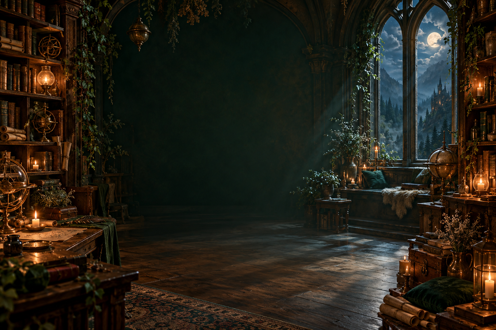

技术服务于表达
工具不断变化。故事、审美和判断，始终值得认真打磨。

ALISA’S ATELIER / 创造与自由
我是 Alisa。
影像创作者 · 品牌内容主理人
在故事、影像与 AI 之间工作，
把想象变成看得见的作品。
触碰盒里的物件，发现作品、故事，以及等待开启的新章节。
WHAT I BRING / 能力与协作
让能力彼此相连。
THE INSPIRATION TREE / 灵感树
故事、品牌、影像与 AI，在这里长成不同的枝丫。
从一次拍摄到持续的内容实践。
轻触一盏灵感，打开它的故事。
BRAND EXPERIENCE / 主理人及合作团队项目经历


BEYOND THE WORK / 关于我
我喜欢故事里复杂的人，也喜欢把一个想法，一点点做成真实的作品。
从新媒体运营、品牌内容到影像创作，我关注表达如何与人产生联系。爱奇艺泡泡的用户与社群运营、芒果 TV《流星花园》的电视剧运营经历，让我同时关注内容与观众的关系。AI 拓展了我的创作方式，也让我不断尝试：一个人，可以把想象推进多远。
工具不断变化。故事、审美和判断，始终值得认真打磨。
电影、历史、音乐和阅读，为创作提供不同的观察角度。
我珍惜专注工作的时间，也相信休息和自由，是长期创作的一部分。
LET’S MAKE SOMETHING MEANINGFUL.
品牌内容运营 / 创意影像 / AIGC 制作
由 Alisa 统一对接，按项目组织专业协作。